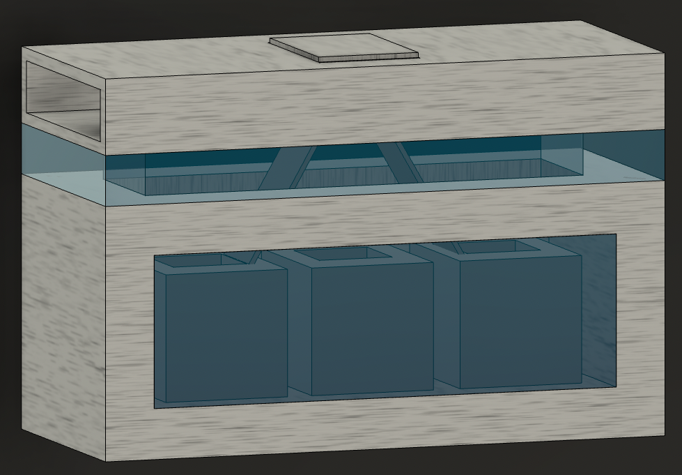

The Future of Zero Waste: The Waste Wizard
Waste Wizard: State of the art trashcan on the forefront of waste disposal technology. The Waste Wizard uses machine learning, a custom model, and custom database, thus boasting a 95% accuracy rate!
Directory
Sleek stainless steel, modern version of the outdated trashcan. Containing an LCD screen in the front and a glass panel to watch motors; as well as a camera and raspberrypi inside. This is truly the most magical of trashcans.
One large, modern centralized trashcan that holds three seperate smaller bins. One for compost, one for recycling, one for trash. The process is to:
Objectives:
Zero waste is difficult to achieve, the waste disposal system is inconvenient and confusing. The lack of convenience, and the lack of motivation is the reason that only 5-6% of plastic was recycled nationally.
Our goal is to encourage, incentivize, and progress zero waste efforts. We believe that corporate buildings, community living areas, and schools are the best places to place the Waste Wizard. In this way, Cox can employ zero waste efforts all around them, instead of only the office. If apartments, schools, and even cities, were to adapt the Waste Wizard and incentive programs, we can really make some real headway in zero waste and enviornmental practices.
The Waste Wizard is useful becuase it reduces the risk of contamination, especially in single stream recycling, and material restortaion factores. Currently, over 27% of single stream recycling in MRFs are contaminated. Reducing contamination, encouraging recycling, and targeting community settings is excactly why the Waste Wizard is amazing.
This is not just an intelligent trashcan; it is a trashcan that has the ability to bring people together and create communities. There is strength in numbers, and only through community and group efforts will we be able to save enviornment.